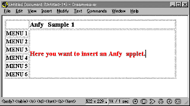
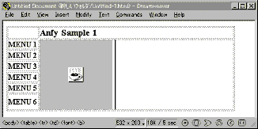
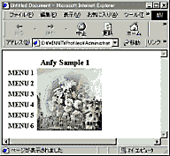

|
Tech support:
How to insert applets to your HTML pages?
|
| |
| Want applets
in your HTML editor? |
|
Many people have wondered how they are able to use
Anfy applets in their HTML documents. We have provided HTML output
functionality in the wizard, but most people don't want to use that
simple document.
There are tens of intuitive WYSIWYG HTML editors
on the market, and they want to know how they add Anfy objects to
existing HTML pages within their HTML editors.
Well, if you only take a look at the manual of your
own editor, the answer should be there! I will show you a simple
way of doing this using Dreamweaver 2 from Macromedia. In the same
way, you can add applets in your own HTML editor window.
|
| 1. Decide where
you want an applet inserted. |
 |
| First, you open a HTML document and
layout texts and images you need, then decide where an Anfy applet
should be inserted. In above example, I'm going to add a cfade applet
to the table cell where a red message states so. |
| 2. Copy applet parameter
scripts to clip board. |
 |
| Fire up Anfy.exe and complete applet setting. In this
example, I have chosen cfade applet and left the default setting intact.
Press "Next" a few times until HTML code appears
Now, "copy all necessary files" to the folder in
which you save other HTML documents for your site. The wizard prompts
you to enter the HTML file name to which cfade parameters shall be
added. Enter whatever the file name you want. You will delete it later
anyway. Next, "copy the code to the clip board." |
| 3. Paste the scripts
to your HTML document. |
 |
|
Go back to the HTML editor and direct the mouse
pointer where you want the applet should be inserted. In Dreamweaver,
HTML is recognised even in WYSIWYG window. So, you only need to
paste the applet parameter codes wherever you want in the document.
Dreamweaver immediately recognises it as a Java™ applet and
displays a famous Java™ symbol, coffee cup in place of the
applet.
Other HTML editors may require to paste the codes
in the source window. For instance, Netscape Composer doesn't allow
you to insert Java™ applets codes in the normal window. The
composer simply shows the codes as normal texts instead. So, you
need to view the source codes of the HTML document and find the
appropriate place to paste the codes by your hand.
|
| 4. View the finished
work. |

|
|
This is the final result. For more instruction for
using Java™ applets with your HTML editor, you really need
to read the manual of the program. More and more HTML editors come
with some nice applets and they really should state somewhere how
to handle Java™ applets in the manual or tutorial. Anfy applets
are handled in the same way as other applets are in a HTML editor,
so there's nothing unique to this copy-and-paste-applets-codes action.
Finally, don't forget to delete the file name which
you specified in the Anfy wizard. Since you manually added the applet
to your existing page, that file is in no use.
|
Though it isn't obliged, you are greatly encouraged
to use our Anfy banner provided in the archive and link to
our site (http://www.anfyteam.com). 
This adds your web site to the growing Anfy
community!
|
|